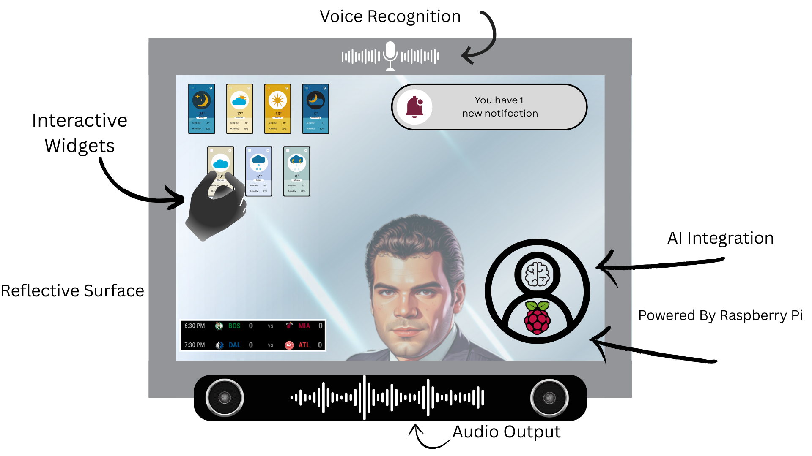
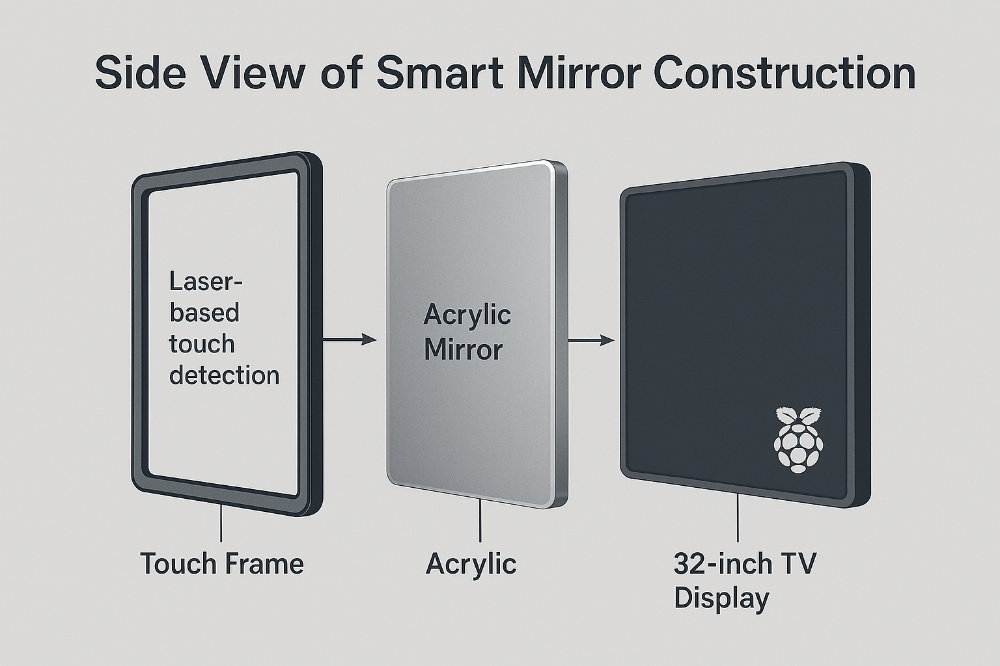

About the Project
Our Smart Mirror project transforms a traditional mirror into a dynamic digital interface. Built using a Raspberry Pi, the mirror displays real-time widgets such as weather, time, calendar events, and more — all while still functioning as a regular mirror.
What makes our mirror unique is its integration with AI. Users can interact with the mirror using voice commands powered by ChatGPT, enabling tasks like asking questions, getting reminders, or receiving personalized updates — just by speaking.
Executive Summary
Our project centers around the development of a Smart Mirror that seamlessly integrates real-time information with intelligent voice interaction. The mirror features dynamic, customizable widgets such as weather updates, calendar events, news headlines, and optional modules like an NBA live score widget. To enhance interactivity, a Raspberry Pi runs ChatGPT, enabling users to give voice commands and receive conversational responses directly through the mirror interface. The physical construction uses a television screen combined with an acrylic layer to create a reflective smart mirror effect. An infrared touch frame surrounds the mirror, allowing users to reposition and customize widget layouts by interacting directly with the surface. This system provides a futuristic, hands-free, and fully personalized experience for users seeking smart home technology that is both functional and intuitive.
Key Features
Custom Dashboard
Widgets for time, weather, calendar, and more — all tailored to you.
AI Voice Control
Interact with the mirror using ChatGPT-powered voice commands.
Powered by Pi
Built using the Raspberry Pi for sleek, low-power operation.
Modern Display
Clean, minimal UI design perfect for smart homes and workspaces.
Smart Mirror Infographic
A visual overview of the smart mirror's functionality, AI interaction, and customizable widget layout.
Mirror Construction Layers
Side view breakdown of the smart mirror, showing the touch frame, acrylic mirror layer, and display.
Components
Raspberry Pi 4
Fifine USB Microphone

Wohome Sound Bar
Infrared Touch Screen
Photos and Videos

This is a photo of the code Slay has been implementing to get the Display looking correct.

This is the current state of our project. Our work this semester was software based which is why we do not have much to show. The hardware will come next semester.

Here is a picture of the brain of our entire project. This is our Raspberry Pi 4 that we are using.
This is a video of the AI responding to commands within our display.
Here is a video of the touchscreen working on the TV.
Documentation
Meet the Team

Noah Christensen
Team Manager — Subsystem: Touchscreen
Jacob Taylor
Subsystem: A.I. Integration
Slay Lucius
Subsystem: Display

Baylor Ormes
Subsystem: User Interface
Logan Bryant
Team Lead — Subsystem: Audio I/O
Faculty Advisor
Project Instructor and Advisor